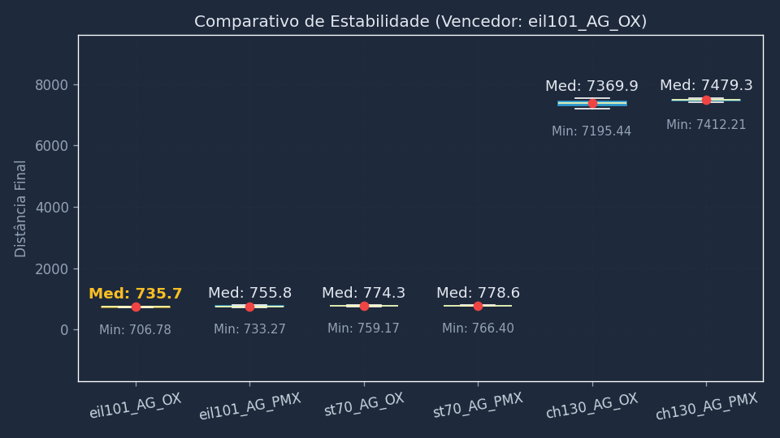

📊 Fase 3: Comparativo de Crossover
Visão Geral da Bateria de Testes
Campeão da Fase
AG_OX
Recorde Absoluto
706.78
Total de Execuções
180
1. Comparativo Geral (Estabilidade)

* Algoritmos mais baixos e com caixas menores são melhores.
2. Resultados por Instância
Instância
Melhor Custo
Vencedor
Detalhes
ST70
759.17
AG_OX
Abrir Relatório ➔
EIL101
706.78
AG_OX
Abrir Relatório ➔
CH130
7195.44
AG_OX
Abrir Relatório ➔